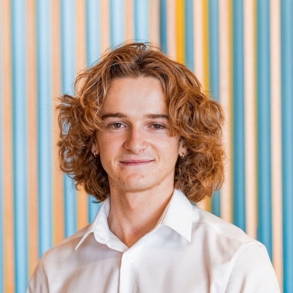

Instructional Assistant, ECE 15 (C Programming)UC San Diego

About
I'm an M.S. student and ML/AI researcher at UC San Diego. My work spans multimodal representation learning, NLP and LLM systems, and on-device inference — currently a Gaussian-process fusion study (manuscript in preparation) and a hybrid retrieval pipeline over technical documents.
Education: M.S. in Electrical & Computer Engineering (Machine Learning & Data Science), UC San Diego, 2026 · B.S. in Electrical Engineering, UC San Diego (GPA 3.75).
PythonC++17KotlinCMATLAB
PyTorchTensorFlowTensorFlow LiteScikit-learn
Hugging FaceNumPyPandasFAISS
PythonC++17KotlinCMATLAB
PyTorchTensorFlowTensorFlow LiteScikit-learn
Hugging FaceNumPyPandasFAISS
PythonC++17KotlinCMATLAB
PyTorchTensorFlowTensorFlow LiteScikit-learn
Hugging FaceNumPyPandasFAISS
PythonC++17KotlinCMATLAB
PyTorchTensorFlowTensorFlow LiteScikit-learn
Hugging FaceNumPyPandasFAISS
Career so far
Experience
Summer Research Intern (Medical Swallow Analysis)UC San Diego
Data Science InternOpenAirlines, Toulouse
ML Research (Gaussian Process Fusion)UC San Diego
Selected Research
Research

Multimodal Gaussian Process Fusion
Built a reproducible pipeline benchmarking a multimodal ensemble Gaussian process — per-modality distributions fused by moment matching — against neural-network and transformer baselines on an 8-dataset benchmark, reaching 0.72 test R² on Melbourne and matching a 5-model deep ensemble on accuracy while beating it on calibration (NLPD 0.4330 vs 0.4447). A 9,703-configuration ablation (9 embedders × 3 GP scaling methods × 5 ensemble modes) showed spectrally normalized networks between encoders and GP heads raised R² from 0.629 to 0.662.

Hybrid RAG over Technical Docs
Co-developed a hybrid RAG pipeline — hierarchical chunking, bge-m3 dense + BM25 sparse retrieval fused by reciprocal-rank fusion, then a bge cross-encoder reranker — reaching F1@5 0.853 / Precision@5 0.889. Designed a HyDE query stage (an LLM drafts a hypothetical answer whose embedding drives retrieval) with parent-chunk expansion, raising F1 from 0.6 to 0.85.
Coursework & Side Projects
Projects
FretBoardCrazies – Guitar Fretboard Trainer (Summer 2026)
- Native SwiftUI app for iOS and macOS that prompts a note and verifies it from live microphone input, detecting pitch through AudioKit's PitchTap.
- Modular by design: generalized a guitar-only app to bass, banjo, and ukulele by injecting an Instrument abstraction through the drill, progress and preset layers over five refactors — deleting hardcoded string ranges instead of branching on type.
- Built spec-first alongside Claude Code: 17 design specs and 16 implementation plans committed before the features they describe, with 8 protocol seams and 254 Swift Testing cases keeping agent-written changes verifiable.
- A music-theory engine suggests the next chord from the current chord and key — 23 chord qualities, 15 harmonic rules, gated behind a 4-tier progression.
Modular Flashcard Maker (Spring 2025)
- Built a locally accessible browser interface combining frontend and backend for flashcard generation.
- Runs entirely on your machine using Ollama to interface with downloaded language models.
- Supports integration with local models via Ollama, including
llama3.1:latest. - Modular architecture for swapping models and customizing few-shot prompts.
- Free and offline: once set up, it's perfect for quick use when you're in a bind—no internet required.

Multimodal Embedding Alignment (Winter 2025)
- Co-developed a framework representing modalities as nodes in a graph and learned translator functions as edges, enabling cross-modal traversal without requiring paired data for every modality combination.
- Trained MLP projection heads with a contrastive objective to align audio, image, and text embeddings in a shared latent space, evaluated with a reconstruction-loss metric.
Team project with Michael
View on GitHubView Paper

NLP: LLM → SLM Distillation for Spanish Summarization (Winter 2025)
- Distilled a Bloom-7B teacher into small language models for Spanish summarization, crawling 5,000 Wikipedia bios and generating teacher summaries on Polytechnique servers.
- GPT-Neo-125M — fully fine-tuned on a laptop, no LoRA — led every metric (ROUGE-1 0.67, BLEU 0.32) over larger LoRA-tuned models, confirmed by an LLM-as-judge (Mistral-7B-Instruct) evaluation loop.
View Paper

Reinforcement Learning: Chess Bot RL Environment (Winter 2025)
- Created a modular and easy-to-modify backend/frontend design for testing different algorithms in chess.
- Provided multiple evaluation metrics for AI vs AI, including an ELO system.
Team project with Enzo, Shashwat, and Luis
View on GitHubView Paper


Smart Pillow – Anti-Snoring Product Pitch (Winter 2025)
- A business-focused engineering project involving the design and pitch of a smart anti-snoring pillow.
- Includes prototype development and market research.
Team project with Fabien and Basile
Link to GitHubView Presentation

ML for Tweet Classification (Fall 2024)
- Compared SVM, 1D/2D CNN, RNN, and Transformer models against a heuristic baseline to detect goals, penalties, cards, and own goals from match-time tweets, reaching 76.9% accuracy and 2nd place in the class Kaggle competition.
- Engineered the feature-extraction, preprocessing, and evaluation pipeline, running ablations over sub-event classification and half-time/full-time boundary placement.
Team project with Violette
View on GitHubView Kaggle Leaderboard
View Paper
View Presentation

Medical Swallow Detection (Summer 2024)
- Built a data-augmentation pipeline (time-stretch, speed shift, white-noise injection) expanding 600 minutes of swallowing audio from 60 patients 5x, keeping only transforms that improved segmentation accuracy.
- Trained a CNN to predict laryngologist-labeled swallow masks, coupling audio with 8,459 sEMG segments from a public dataset to reach 93% segmentation accuracy.
View Presentation

ASL Recognition CNN (Winter 2024)
- Modified a ResNet-10 classifier to take gray-scale hand-skeleton images as a fourth input channel, raising accuracy on 29 ASL letter classes from 96% to 99%.
- Co-developed the model and skeletal-image dataset with one teammate, contributing ~13 of 21 commits and co-authoring the written paper.
Team project with Sebastian
View on GitHubView Paper
View Video on Canva


Gripper Arm – Assistive Device (Spring 2023)
- Designed the CAD model of a forearm-mounted assistive gripper in Onshape, enabling fast prototype iteration.
- Wrote embedded C firmware triggering gripper activation from IR and pressure sensors plus a manual button, closing the claw onto detected objects.
Team project with Quoc and Tahseen
Project Site